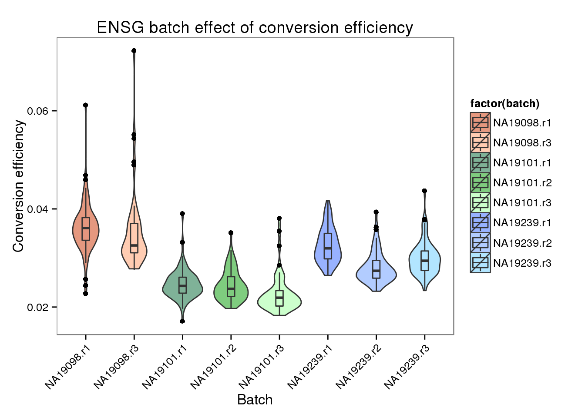
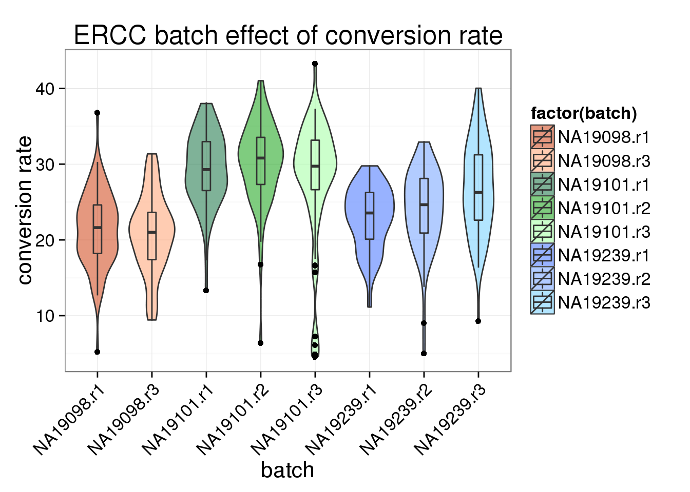
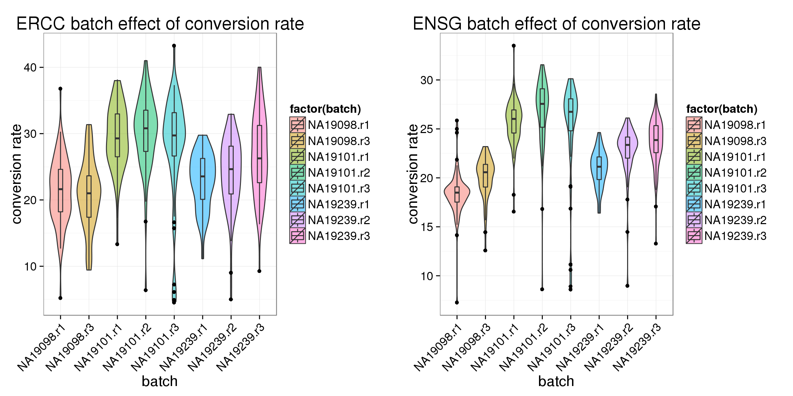

Last updated: 2015-10-21
Code version: 78afeddbcf288d337c42915e95f0d9a578030a08
Compute conversion rates of each cell using the filerted set of cells. Compare conversion rates between batches: is there an individual effect or batch effect of coversion rate?
Note that we will remove the NA19098 batch 2 in the following analyses.
We used Levene’s test and also Brown-Frosythe test to compare variances of conversion rates between batches. Both of these two methods center the observations such that observaitons within each group centered at a mean or median of zero (Levene’s and Brown-Frosythe, respectively). Results below are described at an alpha level of .05. Note that Brown-Frosythe is our reporting statistical test of choice for now.
For the ERCC genes, we found the variances of the conversion rates to vary between the 9 batches (p < .05), but to be similar between the three individuals (p = .61). On the other hand, among the endogeneous genes, we found significant differences in variances of the conversion rates between the 9 batches (p < .0005) and between the individuals (p < .05).
Next we compared variances of the conversion rates between batches within each individual. Interesting, for the ERCC genes, we found NA19239 batches significantly different in variances of the conversion rates (p < .01); while there was no significant difference in conversion rates of the other individual batches. However, among the endogeneous genes, NA19239 batches were not different in variances of the conversion rates; on the other hand, we see a small difference in NA19101 batches in variances of conversion rates (p < .05).
library("dplyr")
library("ggplot2")
theme_set(theme_bw(base_size = 16))
library("edgeR")
source("functions.R")Input annotation.
anno_filter <- read.table("../data/annotation-filter.txt", header = TRUE,
stringsAsFactors = FALSE)
select_individual <- anno_filter$batch != "NA19098.r2"
anno_filter <- anno_filter[select_individual, ]
head(anno_filter) individual replicate well batch sample_id
1 NA19098 r1 A01 NA19098.r1 NA19098.r1.A01
2 NA19098 r1 A02 NA19098.r1 NA19098.r1.A02
3 NA19098 r1 A04 NA19098.r1 NA19098.r1.A04
4 NA19098 r1 A05 NA19098.r1 NA19098.r1.A05
5 NA19098 r1 A06 NA19098.r1 NA19098.r1.A06
6 NA19098 r1 A07 NA19098.r1 NA19098.r1.A07Input read counts.
reads_filter <- read.table("../data/reads-filter.txt", header = TRUE,
stringsAsFactors = FALSE)
reads_filter <- reads_filter[ , select_individual]
reads_ENSG <- reads_filter[grep("ERCC", rownames(reads_filter), invert = TRUE), ]
reads_ERCC <- reads_filter[grep("ERCC", rownames(reads_filter), invert = FALSE), ]Input molecule counts.
molecules_filter <- read.table("../data/molecules-filter.txt", header = TRUE,
stringsAsFactors = FALSE)
molecules_filter <- molecules_filter[ , select_individual]
molecules_ENSG <- molecules_filter[grep("ERCC", rownames(molecules_filter), invert = TRUE), ]
molecules_ERCC <- molecules_filter[grep("ERCC", rownames(molecules_filter), invert = FALSE), ]total_counts_ERCC <- data.frame(total_reads = colSums(reads_ERCC),
total_molecules = colSums(molecules_ERCC))
total_counts_ERCC$conversion <- with(total_counts_ERCC,
total_reads/total_molecules)
summary(total_counts_ERCC) total_reads total_molecules conversion
Min. : 899 Min. :178.0 Min. : 4.534
1st Qu.: 7554 1st Qu.:319.0 1st Qu.:21.252
Median : 9627 Median :363.0 Median :25.587
Mean : 9777 Mean :383.7 Mean :25.411
3rd Qu.:11660 3rd Qu.:449.0 3rd Qu.:29.903
Max. :24537 Max. :707.0 Max. :43.263 total_counts_ENSG <- data.frame(total_reads = colSums(reads_ENSG),
total_molecules = colSums(molecules_ENSG))
total_counts_ENSG$conversion <- with(total_counts_ENSG,
total_reads/total_molecules)
summary(total_counts_ENSG) total_reads total_molecules conversion
Min. : 736808 Min. : 45254 Min. : 7.27
1st Qu.:1805278 1st Qu.: 79457 1st Qu.:19.87
Median :2211026 Median : 93452 Median :23.00
Mean :2157945 Mean : 95740 Mean :22.80
3rd Qu.:2506770 3rd Qu.:111337 3rd Qu.:25.76
Max. :3870013 Max. :195757 Max. :33.50 ggplot(data.frame(total_counts_ENSG,
batch = anno_filter$batch),
aes(x = factor(batch), y = conversion,
fill = factor(batch)), height = 600, width = 2000) +
geom_violin(alpha = .5) +
geom_boxplot(alpha = .01, width = .2, position = position_dodge(width = .9)) +
labs(x = "batch", y = "conversion rate", title = "ENSG batch effect of conversion rate") +
theme(axis.text.x = element_text(hjust=1, angle = 45))
*Between all batches.
library(car)
# Leven's test
leveneTest(y = total_counts_ENSG$conversion,
group = factor(anno_filter$batch), center = mean )Levene's Test for Homogeneity of Variance (center = mean)
Df F value Pr(>F)
group 7 7.4306 1.483e-08 ***
555
---
Signif. codes: 0 '***' 0.001 '**' 0.01 '*' 0.05 '.' 0.1 ' ' 1# Brown-Forsythe test
leveneTest(y = total_counts_ENSG$conversion,
group = factor(anno_filter$batch), center = median )Levene's Test for Homogeneity of Variance (center = median)
Df F value Pr(>F)
group 7 4.0114 0.0002691 ***
555
---
Signif. codes: 0 '***' 0.001 '**' 0.01 '*' 0.05 '.' 0.1 ' ' 1*Between individuals.
library(car)
# Leven's test
leveneTest(y = total_counts_ENSG$conversion,
group = factor(anno_filter$individual), center = mean )Levene's Test for Homogeneity of Variance (center = mean)
Df F value Pr(>F)
group 2 6.111 0.002369 **
560
---
Signif. codes: 0 '***' 0.001 '**' 0.01 '*' 0.05 '.' 0.1 ' ' 1# Brown-Forsythe test
leveneTest(y = total_counts_ENSG$conversion,
group = factor(anno_filter$individual), center = median )Levene's Test for Homogeneity of Variance (center = median)
Df F value Pr(>F)
group 2 4.4099 0.01258 *
560
---
Signif. codes: 0 '***' 0.001 '**' 0.01 '*' 0.05 '.' 0.1 ' ' 1*For each individual, between batches.
for (i in 1:length(unique(anno_filter$individual))) {
print(unique(anno_filter$individual)[i])
select_individual <- with(anno_filter, individual == unique(individual)[i])
# Levene's test
print(leveneTest(y = total_counts_ENSG$conversion[select_individual],
group = factor(anno_filter$replicate[select_individual]), center = mean ))
# Brown-Forsythe test
print(leveneTest(y = total_counts_ENSG$conversion[select_individual],
group = factor(anno_filter$replicate[select_individual]), center = median ) )
}[1] "NA19098"
Levene's Test for Homogeneity of Variance (center = mean)
Df F value Pr(>F)
group 1 0.6335 0.4274
140
Levene's Test for Homogeneity of Variance (center = median)
Df F value Pr(>F)
group 1 0.2636 0.6084
140
[1] "NA19101"
Levene's Test for Homogeneity of Variance (center = mean)
Df F value Pr(>F)
group 2 7.9829 0.000466 ***
194
---
Signif. codes: 0 '***' 0.001 '**' 0.01 '*' 0.05 '.' 0.1 ' ' 1
Levene's Test for Homogeneity of Variance (center = median)
Df F value Pr(>F)
group 2 3.6868 0.02682 *
194
---
Signif. codes: 0 '***' 0.001 '**' 0.01 '*' 0.05 '.' 0.1 ' ' 1
[1] "NA19239"
Levene's Test for Homogeneity of Variance (center = mean)
Df F value Pr(>F)
group 2 1.1051 0.333
221
Levene's Test for Homogeneity of Variance (center = median)
Df F value Pr(>F)
group 2 1.0756 0.3429
221 ggplot(data.frame(total_counts_ERCC,
batch = anno_filter$batch),
aes(x = factor(batch), y = conversion,
fill = factor(batch)), height = 600, width = 2000) +
geom_violin(alpha = .5) +
geom_boxplot(alpha = .01, width = .2, position = position_dodge(width = .9)) +
labs(x = "batch", y = "conversion rate", title = "ERCC batch effect of conversion rate") +
theme(axis.text.x = element_text(hjust=1, angle = 45))
*Between all batches.
library(car)
# Leven's test
leveneTest(y = total_counts_ERCC$conversion,
group = factor(anno_filter$batch), center = mean )Levene's Test for Homogeneity of Variance (center = mean)
Df F value Pr(>F)
group 7 3.1996 0.002485 **
555
---
Signif. codes: 0 '***' 0.001 '**' 0.01 '*' 0.05 '.' 0.1 ' ' 1# Brown-Forsythe test
leveneTest(y = total_counts_ERCC$conversion,
group = factor(anno_filter$batch), center = median )Levene's Test for Homogeneity of Variance (center = median)
Df F value Pr(>F)
group 7 2.3384 0.02331 *
555
---
Signif. codes: 0 '***' 0.001 '**' 0.01 '*' 0.05 '.' 0.1 ' ' 1*Between individuals.
library(car)
# Leven's test
leveneTest(y = total_counts_ERCC$conversion,
group = factor(anno_filter$individual), center = mean )Levene's Test for Homogeneity of Variance (center = mean)
Df F value Pr(>F)
group 2 0.7765 0.4605
560 # Brown-Forsythe test
leveneTest(y = total_counts_ERCC$conversion,
group = factor(anno_filter$individual), center = median )Levene's Test for Homogeneity of Variance (center = median)
Df F value Pr(>F)
group 2 0.6706 0.5118
560 *For each individual, between batches.
for (i in 1:length(unique(anno_filter$individual))) {
print(unique(anno_filter$individual)[i])
select_individual <- with(anno_filter, individual == unique(individual)[i])
# Levene's test
print(leveneTest(y = total_counts_ERCC$conversion[select_individual],
group = factor(anno_filter$replicate[select_individual]), center = mean ))
# Brown-Forsythe test
print(leveneTest(y = total_counts_ERCC$conversion[select_individual],
group = factor(anno_filter$replicate[select_individual]), center = median ) )
}[1] "NA19098"
Levene's Test for Homogeneity of Variance (center = mean)
Df F value Pr(>F)
group 1 0.0703 0.7913
140
Levene's Test for Homogeneity of Variance (center = median)
Df F value Pr(>F)
group 1 0.0699 0.7918
140
[1] "NA19101"
Levene's Test for Homogeneity of Variance (center = mean)
Df F value Pr(>F)
group 2 4.1732 0.01681 *
194
---
Signif. codes: 0 '***' 0.001 '**' 0.01 '*' 0.05 '.' 0.1 ' ' 1
Levene's Test for Homogeneity of Variance (center = median)
Df F value Pr(>F)
group 2 2.4436 0.08951 .
194
---
Signif. codes: 0 '***' 0.001 '**' 0.01 '*' 0.05 '.' 0.1 ' ' 1
[1] "NA19239"
Levene's Test for Homogeneity of Variance (center = mean)
Df F value Pr(>F)
group 2 5.6718 0.003962 **
221
---
Signif. codes: 0 '***' 0.001 '**' 0.01 '*' 0.05 '.' 0.1 ' ' 1
Levene's Test for Homogeneity of Variance (center = median)
Df F value Pr(>F)
group 2 5.3235 0.005521 **
221
---
Signif. codes: 0 '***' 0.001 '**' 0.01 '*' 0.05 '.' 0.1 ' ' 1library(gridExtra)Loading required package: gridgrid.arrange(
ggplot(data.frame(total_counts_ERCC,
batch = anno_filter$batch),
aes(x = factor(batch), y = conversion,
fill = factor(batch)), height = 600, width = 2000) +
geom_violin(alpha = .5) +
geom_boxplot(alpha = .01, width = .2, position = position_dodge(width = .9)) +
labs(x = "batch", y = "conversion rate", title = "ERCC batch effect of conversion rate") +
theme(axis.text.x = element_text(hjust=1, angle = 45))
,
ggplot(data.frame(total_counts_ENSG,
batch = anno_filter$batch),
aes(x = factor(batch), y = conversion,
fill = factor(batch)), height = 600, width = 2000) +
geom_violin(alpha = .5) +
geom_boxplot(alpha = .01, width = .2, position = position_dodge(width = .9)) +
labs(x = "batch", y = "conversion rate", title = "ENSG batch effect of conversion rate") +
theme(axis.text.x = element_text(hjust=1, angle = 45)),
ncol = 2
)
sessionInfo()R version 3.2.0 (2015-04-16)
Platform: x86_64-unknown-linux-gnu (64-bit)
locale:
[1] LC_CTYPE=en_US.UTF-8 LC_NUMERIC=C
[3] LC_TIME=en_US.UTF-8 LC_COLLATE=en_US.UTF-8
[5] LC_MONETARY=en_US.UTF-8 LC_MESSAGES=en_US.UTF-8
[7] LC_PAPER=en_US.UTF-8 LC_NAME=C
[9] LC_ADDRESS=C LC_TELEPHONE=C
[11] LC_MEASUREMENT=en_US.UTF-8 LC_IDENTIFICATION=C
attached base packages:
[1] grid stats graphics grDevices utils datasets methods
[8] base
other attached packages:
[1] gridExtra_0.9.1 car_2.1-0 edgeR_3.10.2 limma_3.24.9
[5] ggplot2_1.0.1 dplyr_0.4.2 knitr_1.10.5
loaded via a namespace (and not attached):
[1] Rcpp_0.12.0 nloptr_1.0.4 formatR_1.2 plyr_1.8.3
[5] bitops_1.0-6 tools_3.2.0 digest_0.6.8 lme4_1.1-10
[9] evaluate_0.7 gtable_0.1.2 nlme_3.1-120 lattice_0.20-31
[13] mgcv_1.8-6 Matrix_1.2-1 DBI_0.3.1 yaml_2.1.13
[17] parallel_3.2.0 SparseM_1.6 proto_0.3-10 httr_0.6.1
[21] stringr_1.0.0 nnet_7.3-9 R6_2.1.1 rmarkdown_0.6.1
[25] minqa_1.2.4 reshape2_1.4.1 magrittr_1.5 scales_0.2.4
[29] htmltools_0.2.6 MASS_7.3-40 splines_3.2.0 assertthat_0.1
[33] pbkrtest_0.4-2 colorspace_1.2-6 quantreg_5.11 labeling_0.3
[37] stringi_0.4-1 RCurl_1.95-4.6 munsell_0.4.2